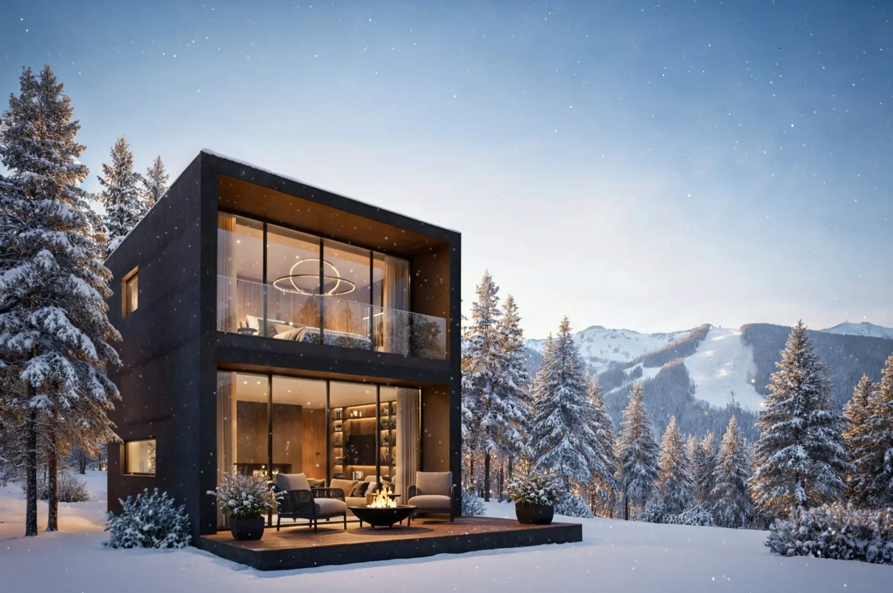
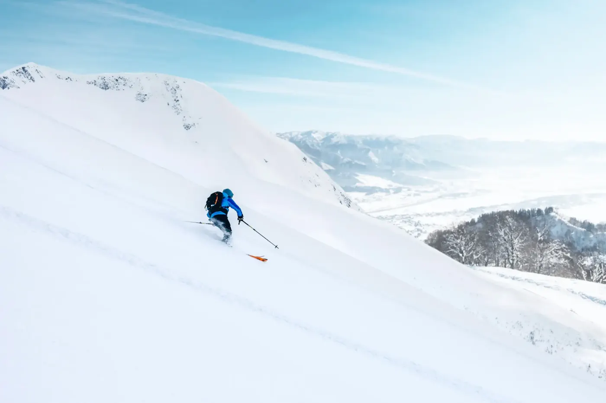
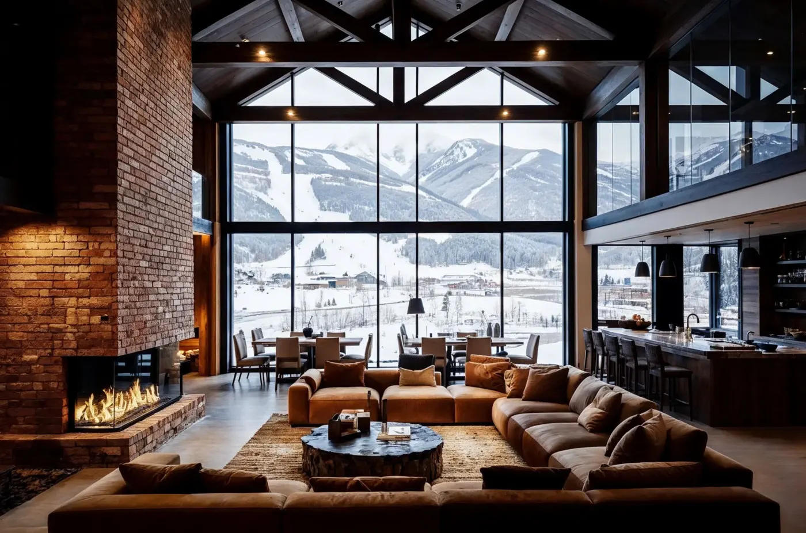
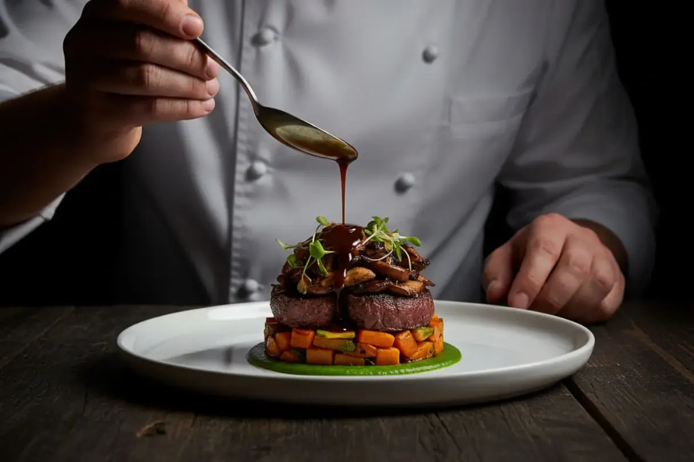
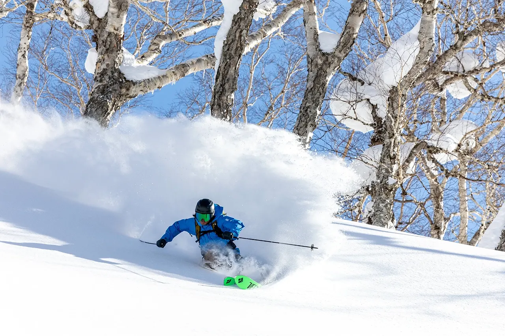
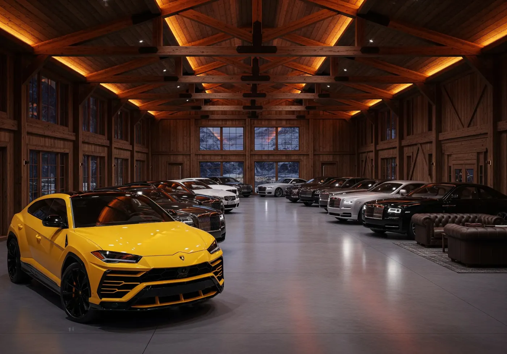
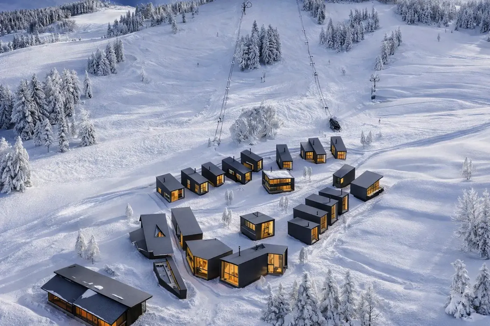
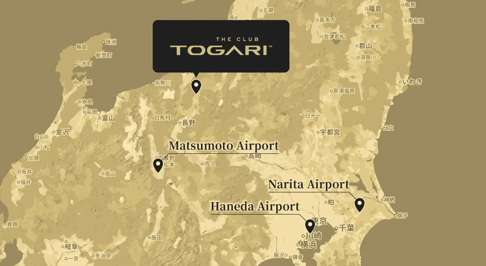

A private world of untouched snow
Exclusive access to the White Dragon Field, a slope open only to club members. Invite family or close friends as guests, in groups of up to ten, and ski entirely at your own pace.
Private / Slope
Iiyama, Nagano · Members only
Asia's first fully private ski resort. A members-only slope, a clubhouse beside the snow, and residences you can ski to from the door.
Request membershipWhy THE CLUB TOGARI
THE CLUB TOGARI is a place where the true richness of the mountains can be experienced freely, purely and without interruption. Here you carve through the quiet and savour a winter defined by elegance and time well spent.
For a select few, another winter begins here: quiet, exclusive and remarkable. Membership is by application and qualification review, and every part of the club is arranged around the time you spend on the snow and the people you spend it with.

White Dragon Field
The experience
Exclusive access to the White Dragon Field, a slope open only to club members. Invite family or close friends as guests, in groups of up to ten, and ski entirely at your own pace.
Private / Slope
An exclusive clubhouse directly beside the slope, with a refined lounge and restaurant made for connection, comfort and unhurried time with the people you came with.
Members / Clubhouse
Each dish is crafted under the supervision of Kanaya Resorts, whose heritage traces back to Japan's oldest resort hotel. Seasonal ingredients, with sweeping views of the winter landscape.
Curated / Table
Finely crafted skis and accessories from Vector Glide, one of Japan's most distinguished luxury ski brands. Arrive without your own gear and still ski at your best.
Curated / Gear
Private indoor vehicle storage, with long-term seasonal care when winter ends. Arriving by train, a private transfer meets you at Iiyama Station on the Hokuriku Shinkansen.
Arrival / TransferMember exclusives
and more…
The first chapter
Membership includes the opportunity to purchase a private Ski-In Ski-Out Residence, a home directly beside the slope. Step outside and begin your run. Return when you choose, to the warmth of your own fireplace and the stillness of a winter morning.
The first phase of development sits in a prime position between the clubhouse and the main lift, a setting designed to complete the ideal ski lifestyle.
Enquire about residences
The visual renderings and illustrations are conceptual and may be subject to modification. Final finishes, furnishings and features may vary from those shown.
Access

Questions
THE CLUB TOGARI is Asia's first fully private ski resort, in Iiyama, Nagano. Members ski the White Dragon Field, a slope open only to club members, and use an exclusive clubhouse beside it.
Yes. Members may invite family or close friends as guests, in groups of up to ten.
Membership requires passing a qualification review and completing the prescribed application process. Send an enquiry through the contact form and the club will be in touch.
Members travelling by train have a private transfer from Iiyama Station on the Hokuriku Shinkansen. Members arriving by car can use a private indoor vehicle garage, with long-term seasonal storage available. See Access.
No. Members can use premium rental skis and accessories provided in collaboration with Vector Glide, one of Japan's most distinguished luxury ski brands.
Membership includes the exclusive right to purchase a private Ski-In Ski-Out Residence beside the slope, and hotel use of the residences. The first phase sits between the clubhouse and the main lift. See Residences.
Contact
Entry into membership requires passing a qualification review and completing the prescribed application process. Tell us a little about yourself and the club will be in touch.
Prefer to call? +81 269 65 2359